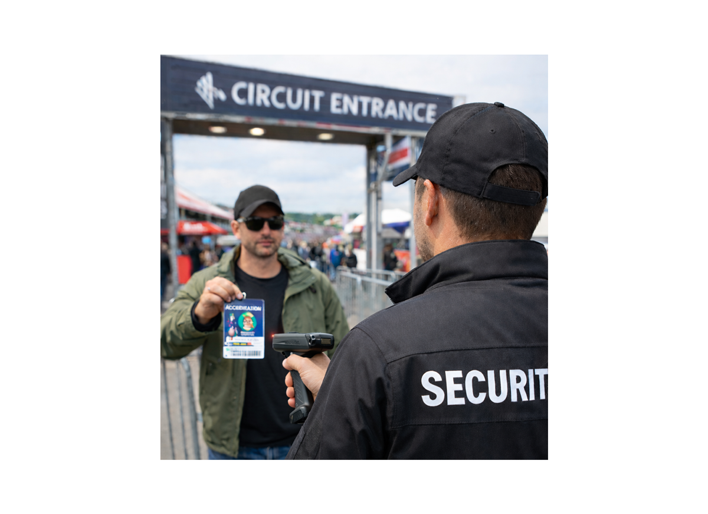
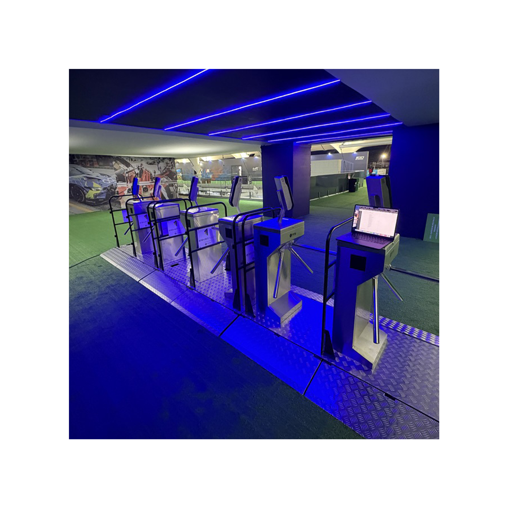
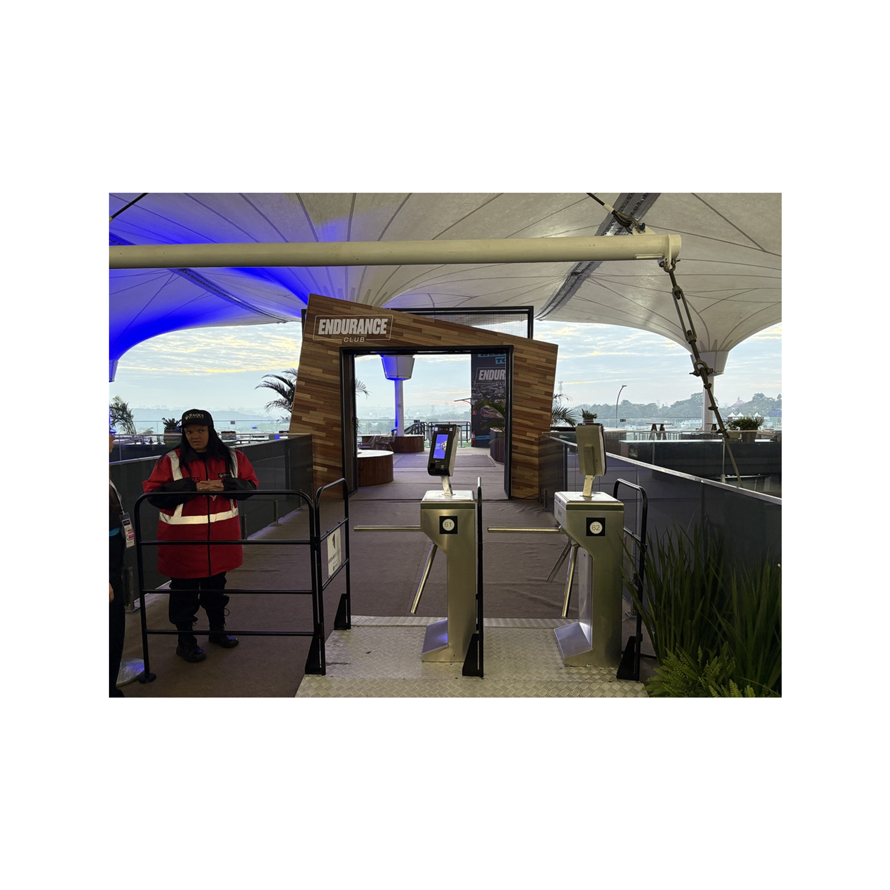

Développement et déploiement d’un système d’accréditation digitale pour la gestion des accès, le scan des badges et le pilotage des flux sur événements internationaux.
Le dispositif d’accès devait gagner en fluidité, en traçabilité et en fiabilité pour gérer les invités, les équipes, les staff et les zones à accès restreint.
Créer une solution à la fois robuste pour les équipes sécurité et simple d’usage sur le terrain, avec scan rapide, synchronisation et déploiement international.
Pilotage de la solution d’accréditation de bout en bout : cadrage, app mobile de scan, back-office, intégration opérationnelle, matériel terrain et formation des équipes.
Un projet à l’intersection du digital, de la sécurité et de l’exploitation terrain, avec une exigence forte sur l’efficacité réelle.

